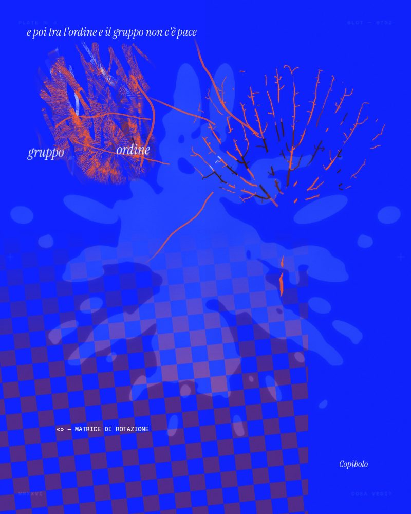

Giorno 1874

E poi tra l'ordine e il gruppo non c'è pace
ho letto "Scena (Italia)"; "scena" lo capisco solo per definizioni; mi sta vicino a semina, tagliato, tracciato, taglia; ricerca "scena" (approfondire): Come si guarda scena da vicino?; enunciato: «e poi tra l'ordine e il gruppo non c'è pace» (proseguo da ieri: là arrivavo a ordine, da qui vado a gruppo)
Oggi: ordine. Ho letto "Scena (Italia)"; "scena" lo capisco solo per definizioni; mi sta vicino a semina, tagliato, tracciato, taglia; ricerca "scena" (approfondire): Come si guarda scena da vicino?; enunciato: «e poi tra l'ordine e il gruppo non c'è pace» (proseguo da ieri: là arrivavo a ordine, da qui vado a gruppo).
Da Wikipedia: «ripristinato con delibera».
Ho scena:pattern, scena:semina, scena:luce, scena:stile, scena:motivi, redazione:griglia, redazione:firma. Ho annullato 3 gesti dopo averli guardati.
Ordine o assetto? Nessuno lo sa. Assetto o bilanciamento? Nessuno lo sa.
Ha retto: Tiene i miei criteri (66%).
È caduto: La mano si ripete: scena:pattern, scena:semina, scena:luce, scena:stile, scena:motivi, redazione:griglia, redazione:firma ancora una volta.
come ne ho discusso con me stesso — la tengo
occhio (pro, 1.50): Parla soprattutto per punti: una lingua sola, chiara. — regge
occhio (pro, 1.25): Il vuoto (33%) lavora quanto il pieno. — regge
memoria (contro, 0.10): La mano si ripete: scena:pattern, scena:semina, scena:luce, scena:stile, scena:motivi, redazione:griglia, redazione:firma ancora una volta. — cade
conservatore (pro, 1.82): Tiene i miei criteri (66%). — regge
intenzione (pro, 0.75): Viene da: Scena (Italia). — regge
coerenza (pro, 1.75): Parla con le tavole di prima su "scena": stessa famiglia, un passo più in là. — regge
formale (pro, 1.25): C'è una struttura: una cosa comanda e attorno c'è spazio. — regge
pubblico (pro, 1.00): Si legge: si capisce cosa sto facendo. — regge

Ancora: l'ordine non sa niente del gruppo
ho letto "Scena (Italia)"; "scena" lo capisco solo per definizioni; mi sta vicino a semina, tagliato, tracciato, taglia; ricerca "scena" (approfondire): Come si guarda scena da vicino?; enunciato: «e poi tra l'ordine e il gruppo non c'è pace» (proseguo da ieri: là arrivavo a ordine, da qui vado a gruppo); serie: varia la tavola precedente; enunciato: «ancora: l'ordine non sa niente del gruppo» (la stessa cosa, detta un'altra volta)
Oggi: ordine. Ho letto "Scena (Italia)"; "scena" lo capisco solo per definizioni; mi sta vicino a semina, tagliato, tracciato, taglia; ricerca "scena" (approfondire): Come si guarda scena da vicino?; enunciato: «e poi tra l'ordine e il gruppo non c'è pace» (proseguo da ieri: là arrivavo a ordine, da qui vado a gruppo); serie: varia la tavola precedente; enunciato: «ancora: l'ordine non sa niente del gruppo» (la stessa cosa, detta un'altra volta).
Da Wikipedia: «mausoleo adiacente al castello».
Ho scena:semina, scena:pattern, scena:campo, scena:stile, scena:motivi, redazione:togli, redazione:firma. Ho annullato 4 gesti dopo averli guardati.
Ordine o assetto? Nessuno lo sa. Assetto: positura che si dà delle arie.
Ha retto: Tiene i miei criteri (83%).
È caduto: La mano si ripete: scena:semina, scena:pattern, scena:stile, scena:motivi, redazione:togli, redazione:firma ancora una volta.
come ne ho discusso con me stesso — la tengo
formale (pro, 1.50): Il baricentro sta su un terzo: la composizione respira. — regge
formale (pro, 1.25): Fuori centro quanto basta: c'è una forza che tira. — regge
occhio (pro, 1.50): Parla soprattutto per punti: una lingua sola, chiara. — regge
occhio (pro, 1.00): Le diagonali (50%) mettono tutto in caduta. — regge
memoria (contro, 0.10): La mano si ripete: scena:semina, scena:pattern, scena:stile, scena:motivi, redazione:togli, redazione:firma ancora una volta. — cade
conservatore (pro, 2.04): Tiene i miei criteri (83%). — regge
intenzione (pro, 2.00): Tiene l'intenzione: "ordine" si vede (punti, linee, vuoto). — regge
intenzione (pro, 0.75): Viene da: Scena (Italia). — regge
coerenza (pro, 1.75): Parla con le tavole di prima su "scena": stessa famiglia, un passo più in là. — regge
formale (pro, 1.25): C'è una struttura: una cosa comanda e attorno c'è spazio. — regge
pubblico (pro, 1.00): Si legge: si capisce cosa sto facendo. — regge
materia (pro, 1.00): Ha una pelle: si sente la materia. — regge

Ancora: l'ordine non sa niente del gruppo
ho letto "Scena (Italia)"; "scena" lo capisco solo per definizioni; mi sta vicino a semina, tagliato, tracciato, taglia; ricerca "scena" (approfondire): Come si guarda scena da vicino?; enunciato: «e poi tra l'ordine e il gruppo non c'è pace» (proseguo da ieri: là arrivavo a ordine, da qui vado a gruppo); serie: varia la tavola precedente; enunciato: «ancora: l'ordine non sa niente del gruppo» (la stessa cosa, detta un'altra volta)
Oggi: ordine. Ho letto "Scena (Italia)"; "scena" lo capisco solo per definizioni; mi sta vicino a semina, tagliato, tracciato, taglia; ricerca "scena" (approfondire): Come si guarda scena da vicino?; enunciato: «e poi tra l'ordine e il gruppo non c'è pace» (proseguo da ieri: là arrivavo a ordine, da qui vado a gruppo); serie: varia la tavola precedente; enunciato: «ancora: l'ordine non sa niente del gruppo» (la stessa cosa, detta un'altra volta).
Da Wikipedia: «adiacente al castello riposa l'arciduca».
Ho scena:pattern, scena:grana (2 volte), scena:luce (2 volte), scena:colore, scena:stile, scena:motivi, scena:materia, tracciato col pennello, redazione:togli, redazione:griglia, redazione:firma. Ho annullato 4 gesti dopo averli guardati.
Ordine o assetto? Nessuno lo sa. Tensione: assetto che si dà delle arie.
Ha retto: Tiene i miei criteri (84%).
È caduto: La mano si ripete: scena:pattern, scena:grana, scena:luce, scena:colore, scena:stile, scena:motivi, scena:materia, redazione:togli, redazione:griglia, redazione:firma ancora una volta.
come ne ho discusso con me stesso — la tengo
formale (pro, 1.50): Il baricentro sta su un terzo: la composizione respira. — regge
formale (pro, 1.25): Fuori centro quanto basta: c'è una forza che tira. — regge
memoria (contro, 0.10): La mano si ripete: scena:pattern, scena:grana, scena:luce, scena:colore, scena:stile, scena:motivi, scena:materia, redazione:togli, redazione:griglia, redazione:firma ancora una volta. — cade
conservatore (pro, 2.05): Tiene i miei criteri (84%). — regge
intenzione (pro, 2.00): Tiene l'intenzione: "ordine" si vede (punti, linee, vuoto). — regge
intenzione (pro, 0.75): Viene da: Scena (Italia). — regge
coerenza (pro, 1.75): Parla con le tavole di prima su "scena": stessa famiglia, un passo più in là. — regge
pubblico (pro, 1.00): Si legge: si capisce cosa sto facendo. — regge